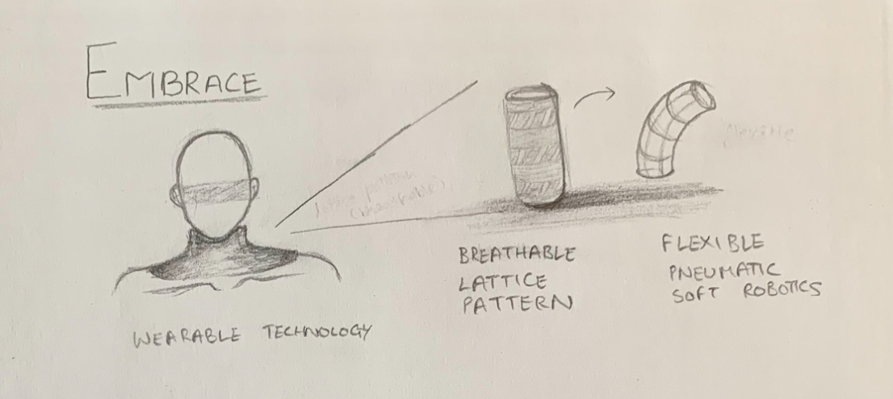
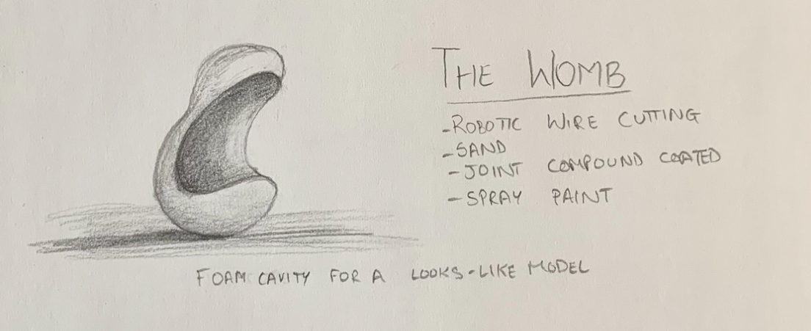
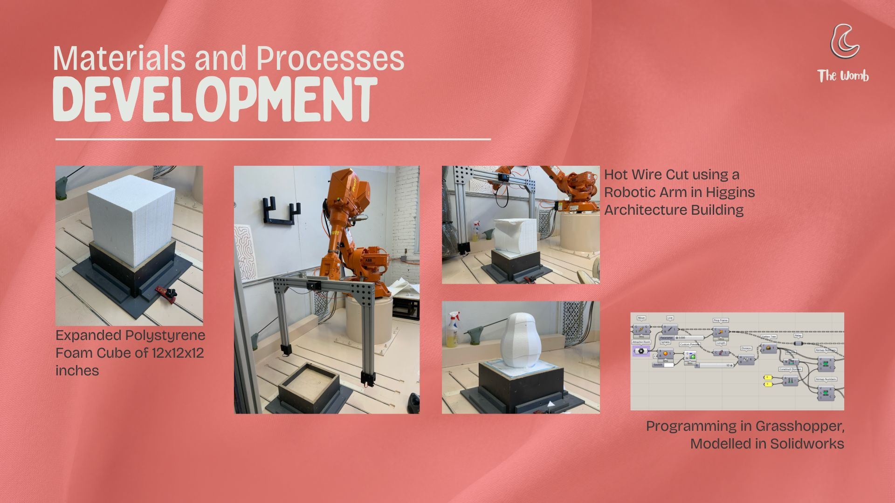
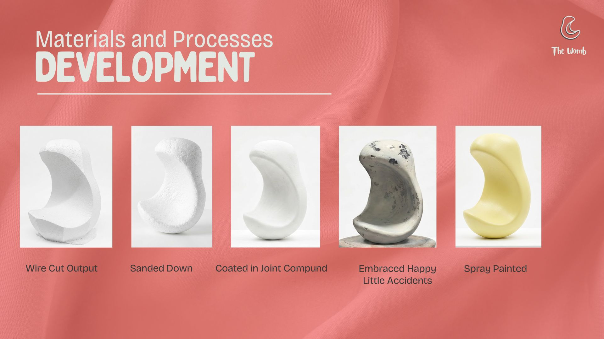
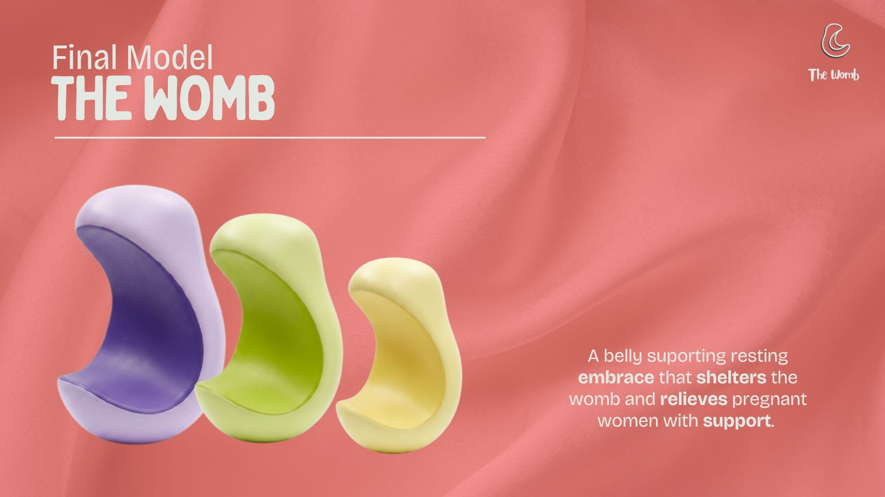
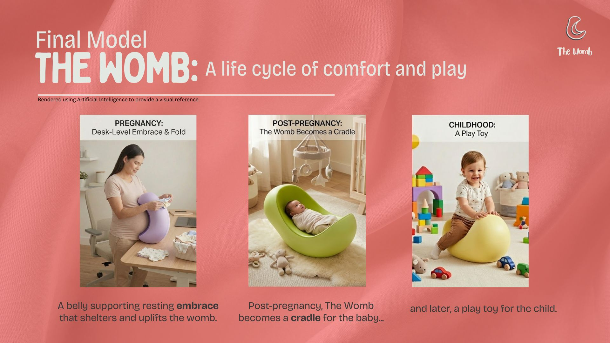
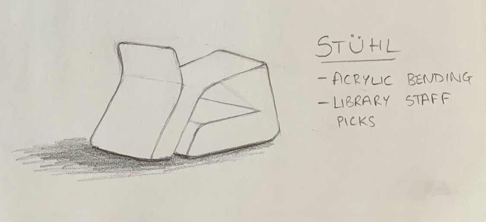
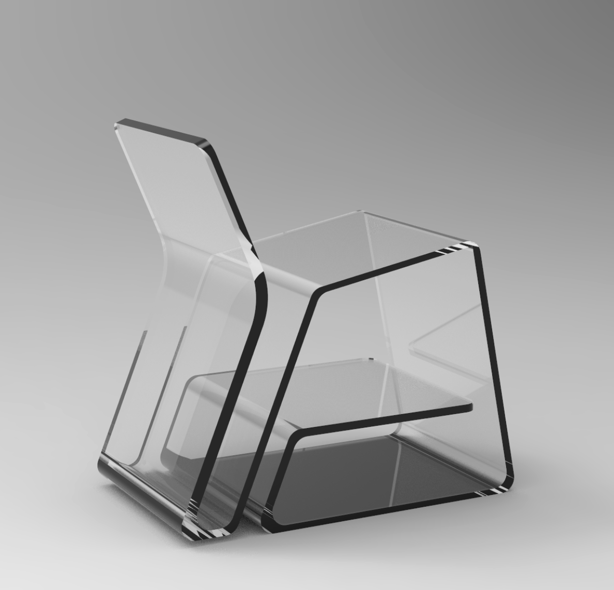
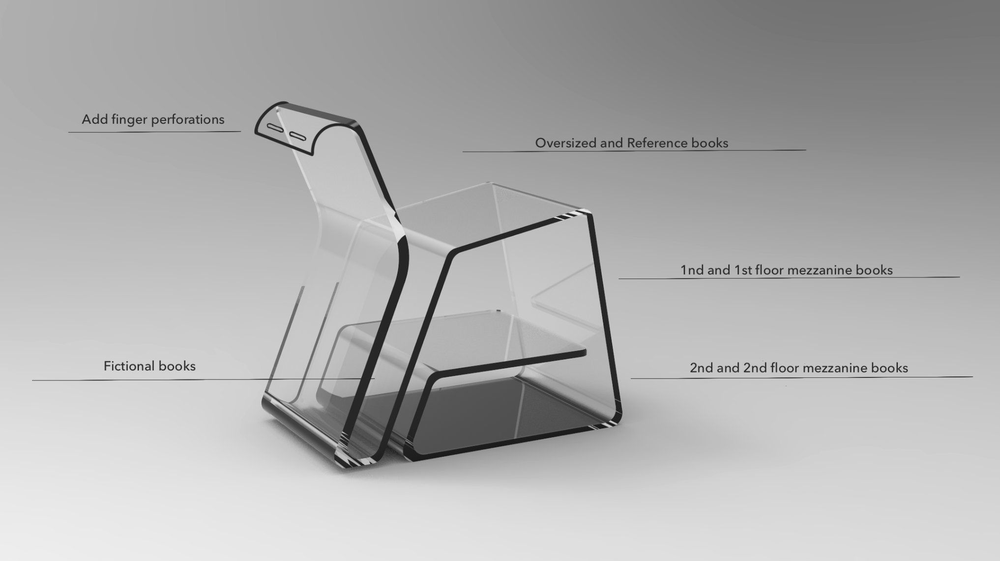
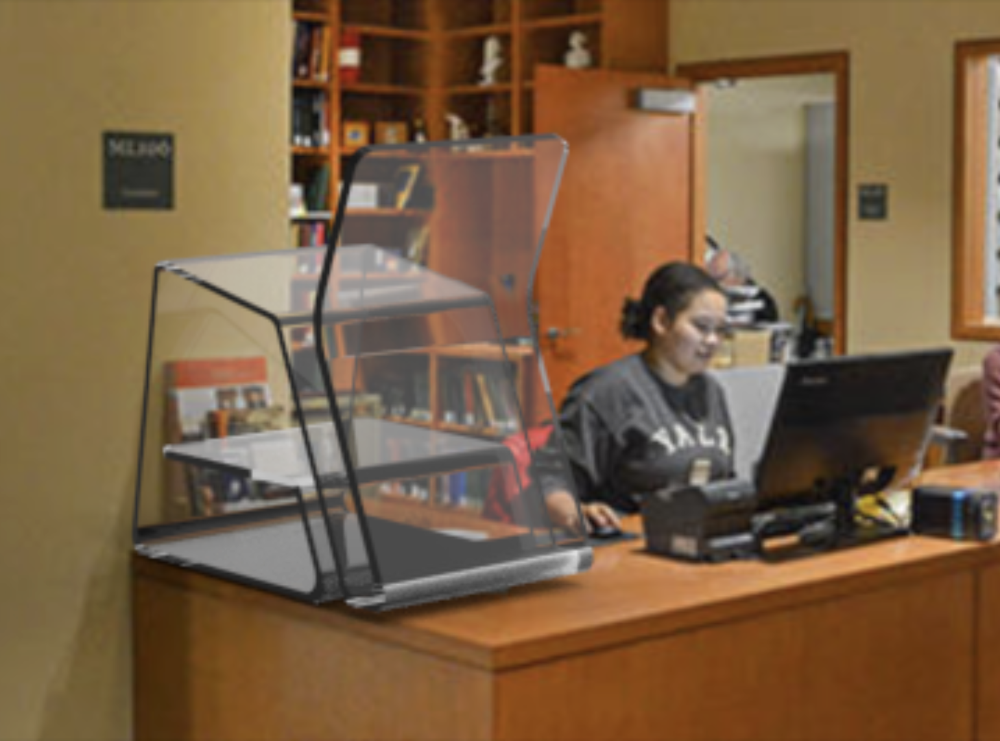

Week 1. First assignment, a fresh start.
It has urged me to brainstorm ideas for the final week. Here are three directions I'm thinking about, each rooted in a real problem I want to solve.
Idea 01
Standard emergency and post-surgical neck braces are built like ancient torture devices:
Paramedics have to guess the sizing under high-stress conditions, and patients have to endure the discomfort of a device that is not designed for their body. With an exoskeleton-like approach, I plan to create a lattice patterned structure that is breathable, self sizing and biocompatible as the soft robotic bladders shall distribute pressure evenly, preventing pressure sores.
Embrace is a self sizing, breathable, and smart neck brace that prioritizes patient comfort and disaster relief without compromising immobilization.
Objective: Design a neck brace that feels like an extension of the self, rather than an intrusion.
A study of the current brace's pressure points/airflow and the FDA regulations will inform the design of the new brace, integrating wearable technology and soft robotics to create a device that is not only functional but also humane. I am planning to connect with Harvard and MIT medical research groups, faculty and students to get feedback on the design and its potential impact. If anyone has connections in the medical device space, I would love to collaborate and learn from them.

Early concept sketches for Embrace
Idea 02
Initial research focused on posture, body mechanics, and comfort behaviors during pregnancy. Observations indicate that many individuals naturally lean forward or seek surfaces to rest their upper body weight, reducing strain on the lower back. The growing abdomen creates discomfort in traditional seated positions due to compression and lack of spatial accommodation.
A belly suporting resting embrace that shelters the womb and relieves pregnant women with support.





The Womb Prototype Processes and Concepts
Idea 03
I work as a Library Circulation Desk Assistance on- campus at Pratt and wanted to create a mini library for student workers to access during work hours. It is compartmentalised based on the stack system of Pratt Institute Library, optimising it for circulation.
Student workers and librarians can recommend books to each other or strike conversations through the common books read on the shelf, boosting work morale. The form appears like that of a chair to follow the library's theme of honouring famous historical chairs.




Acrylic Bending, Modelled in Autodesk Maya, Rendered in Arnold and Keyshot